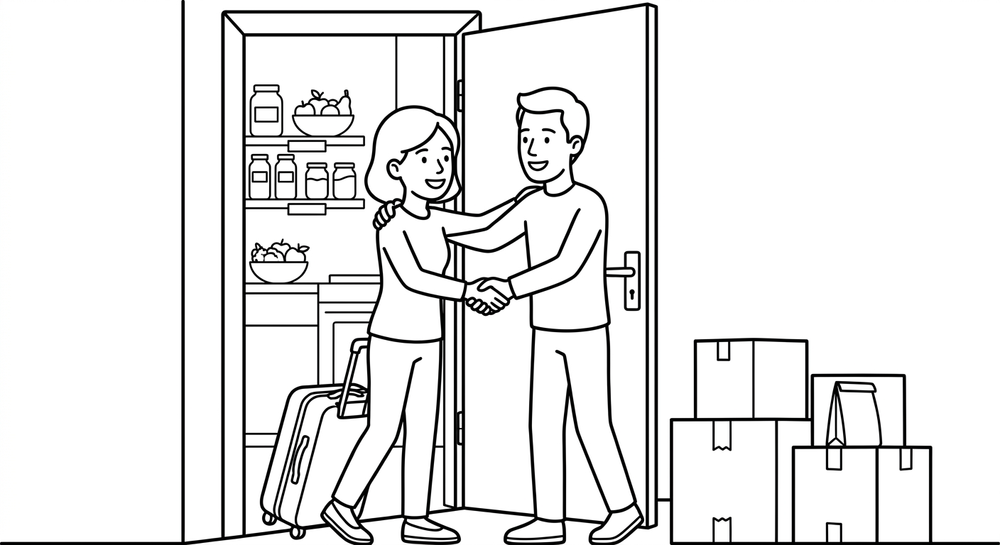

B2 Foundation Test 1
A new home, a full kitchen, your neighbourhood, and a shopping trip. Show that you can understand a welcome conversation, read a practical message, describe a place in writing, and use the formulas from Chapters 1–5. (Uma casa nova, a cozinha, o bairro e as compras. Mostre que você entende uma conversa de boas-vindas, lê uma mensagem prática, descreve um lugar por escrito e usa as fórmulas dos Capítulos 1–5.)

| Section | Points | Score |
|---|---|---|
| 1. Listening | 25 | ____ / 25 |
| 2. Reading | 20 | ____ / 20 |
| 3. Writing | 20 | ____ / 20 |
| 4. Grammar and Vocabulary | 35 | ____ / 35 |
| Total | 100 | ____ / 100 |
Suggested time: 70 minutes. The teacher will read the listening text twice. You may take short notes. Write clearly. In open answers, communicating the message matters as well as accuracy. (Tempo sugerido: 70 minutos. O professor vai ler o texto de listening duas vezes. Você pode fazer anotações curtas. Nas respostas abertas, comunicar a mensagem é tão importante quanto a gramática perfeita.)
Listening: Welcome to the New House
Before reading: give students 45 seconds to preview Questions 1–5. Read the complete script once at careful B2 speed — slower than natural conversation, but do not separate every word as at B1. Pause for 30 seconds. Read it a second time. Do not explain vocabulary during the test. Procedural instructions may be given in Portuguese; the script itself is read only in English. Total recommended time: Listening 12 min, Reading 15 min, Writing 18 min, Grammar/Vocabulary 25 min.
Camila: Welcome, Rafael! This is the new house. Can I ask you some questions while we check the kitchen?
Rafael: Of course!
Camila: What do you do?
Rafael: I work at a bakery in the morning, and I study English at night.
Camila: Great. So, the kitchen: there are some eggs and a lot of rice, but there isn't any coffee.
Rafael: How many eggs are there?
Camila: Only a few — six, I think. Put your cups on this shelf here. Those boxes over there go to your bedroom.
Rafael: Sorry, can you repeat, please? This shelf or that one?
Camila: This one, next to the window. And we need to buy coffee at the market on Saturday. The market is opposite the church.
Rafael: Perfect. So we need coffee, and the market is opposite the church. Thank you!
Answer with a word, a number, or a short sentence. (Responda com uma palavra, um número ou uma frase curta.)
What does Rafael do in the morning?
He works at a bakery. (He studies English at night.)Name one thing there IS in the kitchen and one thing there ISN'T.
There are some eggs / a lot of rice; there isn't any coffee.How many eggs are there?
Only a few — six.Rafael does not understand which shelf Camila means. What does he say?
"Sorry, can you repeat, please? This shelf or that one?" (any close version of the repair question)Where is the market?
Opposite the church.Reading: A Note for the New Housemate
Hi Rafael!
Welcome to the house! I work on Saturdays, so here is some information for your first weekend.
In the kitchen there is a lot of rice and there are some beans, but there isn't much oil and there aren't any tomatoes. Can you buy two bottles of oil, a few tomatoes, and some bread? There is an open-air market on our street every Saturday. The market is cheap, and the fruit there is the best in the neighbourhood.
There is also a bakery near the square. The bakery opens at seven, and the pão de queijo is wonderful. Please don't use the plates on the top shelf — those plates are Dona Marta's. These cups on the table are for everybody.
See you on Sunday! Camila
Why is Camila not at home on Saturday?
Because she works on Saturdays.Write two things Rafael needs to buy, with the quantities.
Any two: two bottles of oil; a few tomatoes; some bread.When does the bakery open, and where is it?
It opens at seven; it is near the square.Which plates can Rafael NOT use? Why?
The plates on the top shelf — those plates are Dona Marta's.Writing: Describe Your Home and Neighbourhood
A new student from another city is coming to stay near you. Write 50–70 words describing your home and neighbourhood. Include: (Um estudante novo de outra cidade vai morar perto de você. Escreva de 50 a 70 palavras descrevendo sua casa e seu bairro. Inclua:)
- two sentences with There is / There are + a quantifier (some, a few, a lot of...);
- one place mentioned with a/an the first time and the the second time;
- one thing you need to buy, with some or any;
- one question for the new student.
| Writing criterion | Points | Teacher score |
|---|---|---|
| Completes the description and includes the four required details | 8 | ____ / 8 |
| Message is organized and understandable | 4 | ____ / 4 |
| Target language supports meaning (there is/are, quantifiers, articles) | 4 | ____ / 4 |
| Vocabulary, spelling, and punctuation are clear enough | 4 | ____ / 4 |
Message completion comes first: did the student communicate the four details? Do not deduct the same error twice. A description with imperfect grammar can score well when it is easy to understand. Written feedback may combine English and Portuguese at this level.
Grammar and Vocabulary in Context
Complete or rewrite each everyday situation. (Complete ou reescreva cada situação do dia a dia.)
Correct the sentence: "There is many eggs in this kitchen."
There are many eggs in this kitchen. (accept: There are some / a lot of eggs...)What to Keep and What to Practice Next
| Skill | Score | Next action |
|---|---|---|
| Listening | ____ / 25 | Listen for routines, quantities, near/far objects, and places. |
| Reading | ____ / 20 | Find what there is, what is missing, and where places are. |
| Writing | ____ / 20 | Describe a place with there is/are, quantifiers, and a/an → the. |
| Grammar/Vocabulary | ____ / 35 | Review WH questions, plurals, articles, quantifiers, and demonstratives. |